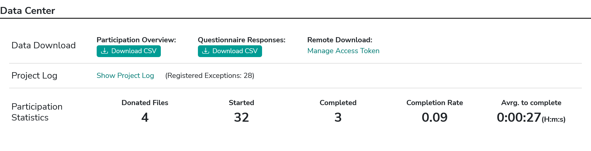

Data Center
In the Data Center, you can find options to (a) access the collected data, (b) access the project logs, and (c) find some general field statistics about the progress of your project.

Figure 1. Data Center in the Project Hub
In the Data Center, you can find options to (a) access the collected data, (b) access the project logs, and (c) find some general field statistics about the progress of your project.